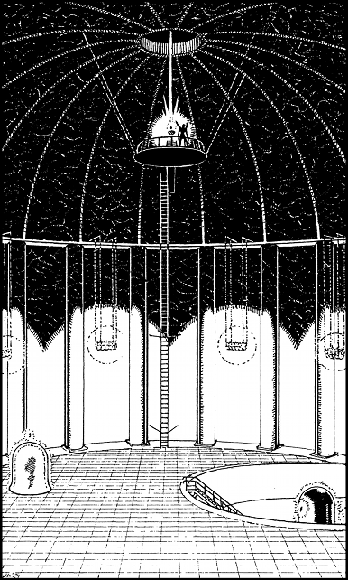

120
You step over the guards’ bodies and press your shoulder to the door, letting the heavy portal swing open just a few inches. Cold air rushes out, chilling your face, and your Kai senses tingle when you feel the evil power of the runes bleeding from the hall beyond. Steeling yourself for what may lie ahead, you push against the door again and slip in through the widening gap.
Before you lies a magnificent chamber hewn from polished obsidian. Colossal columns rise along its curved walls, and iron cradles filled with glowing stones illuminate the jet-black surfaces. Away to your right you can see a metal staircase leading down to the bottom of a vast pit. At its centre there stands a great black bell-like object that is sheathed with crackling energies, sparking and fusing noisily. You take a step forward and gasp when you first see the line of Vorka that are emerging from the side of this belled chamber. Like scaly automatons, they march forth in an endless stream that disappears into an archway on the far side of the pit. You sense the presence of a rune and, when you scour the bell-chamber using your magnified vision, you glimpse the oblong of black stone embedded into its surface.

To your left, facing the stairs to the pit, there is another bell-chamber. It is identical in shape and size to the one below, yet this one is constructed from a clear, glass-like mineral. Within its core there stands a frozen column of black mist, and set into a hollow in its flared top you can see a second rune.
Your Sixth Sense tells you that there are three runes present in this great hall, yet it is not until you look up at the domed ceiling that you locate the third. On a wide circular platform suspended below an aperture at the top of the dome, you see Lord Vandyan. He is fixing the third rune into a saucer of crystal and he is so engrossed in this task that he fails to see that you are standing in the hall below. Through the aperture in the dome you can see the night sky. Cold winds howl and bolts of lightning flash and sizzle, ripping apart the clouds as the power of a supernatural storm builds to a frightening crescendo above Skull-Tor.
If you possess the Discipline of Astrology, turn to 308.
If you do not, turn to 231.